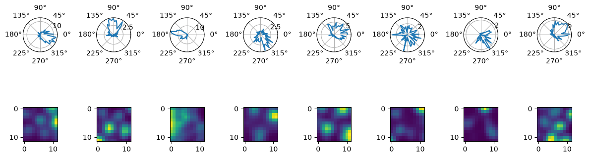
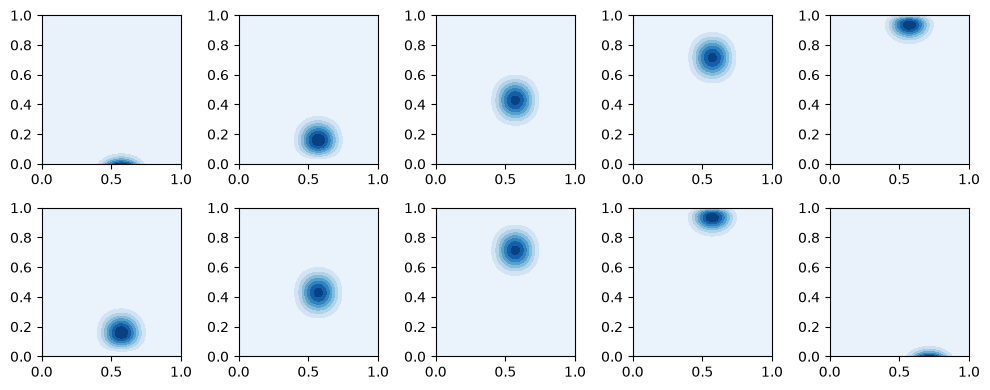
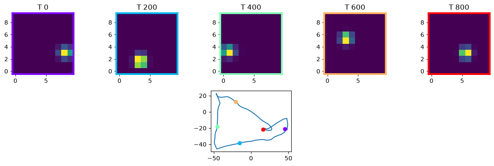
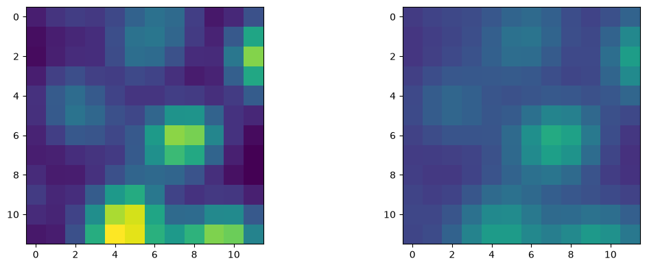
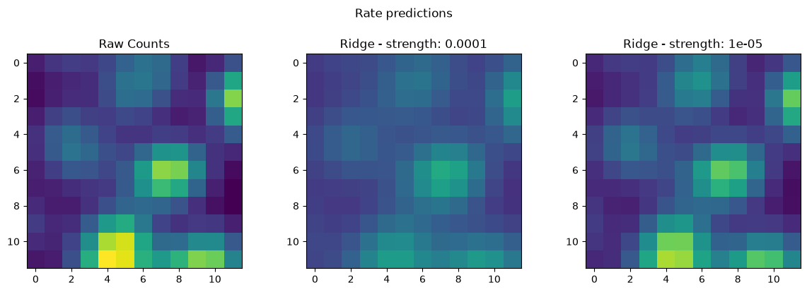

Download
Download this notebook: plot_03_grid_cells.ipynb!
Fit grid cell#
import matplotlib.pyplot as plt
import numpy as np
import pynapple as nap
from scipy.ndimage import gaussian_filter
import nemos as nmo
Data Streaming#
The data used in this tutorial were used in this publication: Sargolini, Francesca, et al. “Conjunctive representation of position, direction, and velocity in entorhinal cortex.” Science 312.5774 (2006): 758-762. The data can be found on the DANDI Archive in Dandiset 000582 with DOI https://doi.org/10.48324/dandi.000582/0.251111.2151.
DANDI allows you to stream data without downloading all the files. In this case the data extracted from the NWB file are stored in the nwb-cache folder.
io = nmo.fetch.download_dandi_data(
"000582",
"sub-11265/sub-11265_ses-07020602_behavior+ecephys.nwb",
)
Pynapple#
Let’s load the dataset and see what’s inside
dataset = nap.NWBFile(io.read(), lazy_loading=False)
print(dataset)
07020602
┍━━━━━━━━━━━━━━━━━━━━━┯━━━━━━━━━━┑
│ Keys │ Type │
┝━━━━━━━━━━━━━━━━━━━━━┿━━━━━━━━━━┥
│ units │ TsGroup │
│ ElectricalSeriesLFP │ Tsd │
│ SpatialSeriesLED2 │ TsdFrame │
│ SpatialSeriesLED1 │ TsdFrame │
│ ElectricalSeries │ Tsd │
┕━━━━━━━━━━━━━━━━━━━━━┷━━━━━━━━━━┙
In this case, the data were used in this publication. We thus expect to find neurons tuned to position and head-direction of the animal. Let’s verify that with pynapple. First, extract the spike times and the position of the animal.
spikes = dataset["units"] # Get spike timings
position = dataset["SpatialSeriesLED1"] # Get the tracked orientation of the animal
Here we compute quickly the head-direction of the animal from the position of the LEDs.
diff = dataset["SpatialSeriesLED1"].values - dataset["SpatialSeriesLED2"].values
head_dir = (np.arctan2(*diff.T) + (2 * np.pi)) % (2 * np.pi)
head_dir = nap.Tsd(dataset["SpatialSeriesLED1"].index, head_dir).dropna()
Let’s quickly compute some tuning curves for head-direction and spatial position.
hd_tuning = nap.compute_tuning_curves(
spikes, features=head_dir, bins=61, range=(0, 2 * np.pi), feature_names=["angles"]
)
pos_tuning = nap.compute_tuning_curves(
spikes, features=position, bins=12, feature_names=["x","y"]
)
Let’s plot the tuning curves for each neuron.
fig = plt.figure(figsize=(12, 4))
gs = plt.GridSpec(2, len(spikes))
for i in range(len(spikes)):
ax = plt.subplot(gs[0, i], projection="polar")
ax.plot(hd_tuning[i].angles, hd_tuning[i])
ax = plt.subplot(gs[1, i])
ax.imshow(gaussian_filter(pos_tuning[i], sigma=1))
plt.tight_layout()

NeMoS#
It’s time to use NeMoS. Let’s try to predict the spikes as a function of position and see if we can generate better tuning curves First we start by binning the spike trains in 10 ms bins.
bin_size = 0.01 # second
counts = spikes.count(bin_size, ep=position.time_support)
We need to interpolate the position to the same time resolution. We can still use pynapple for this.
position = position.interpolate(counts)
We can define a two-dimensional basis for position by multiplying two one-dimensional bases, see here for more details.
basis_2d = nmo.basis.BSplineEval(
n_basis_funcs=10, label="x"
) * nmo.basis.BSplineEval(n_basis_funcs=10, label="y")
# add a label for the multiplicative basis
basis_2d.label = "position"
basis_2d
'position': MultiplicativeBasis(
basis1='x': BSplineEval(n_basis_funcs=10, order=4),
basis2='y': BSplineEval(n_basis_funcs=10, order=4),
)In a Jupyter environment, please rerun this cell to show the HTML representation or trust the notebook. On GitHub, the HTML representation is unable to render, please try loading this page with nbviewer.org.
Parameters
| label | 'position' | |
| x__bounds | None | |
| x__fill_value | nan | |
| x__label | 'x' | |
| x__n_basis_funcs | 10 | |
| x__order | 4 | |
| x | 'x': BSplineE...s=10, order=4) | |
| y__bounds | None | |
| y__fill_value | nan | |
| y__label | 'y' | |
| y__n_basis_funcs | 10 | |
| y__order | 4 | |
| y | 'y': BSplineE...s=10, order=4) |
Let’s see what a few basis look like. Here we evaluate it on a 100 x 100 grid.
X, Y, Z = basis_2d.evaluate_on_grid(100, 100)
We can visualize the basis.
fig, axs = plt.subplots(2, 5, figsize=(10, 4))
for k in range(2):
for h in range(5):
axs[k][h].contourf(X, Y, Z[:, :, 50 + 2 * (k + h)], cmap="Blues")
plt.tight_layout()

Each basis element represent a possible position of the animal in an arena. Now we can “evaluate” the basis for each position of the animal
position_basis = basis_2d.compute_features(position["x"], position["y"])
/home/jenkins/agent/workspace/CCN_nemos_PR-612/venv/lib/python3.12/site-packages/pynapple/core/utils.py:198: UserWarning: Converting 'd' to numpy.array. The provided array was of type 'ArrayImpl'.
warnings.warn(
Now try to make sense of what it is
print(position_basis.shape)
(59998, 100)
The shape is (n_samples, n_basis). This means that for each time point “t”, we evaluated the basis at the corresponding position. Let’s plot 5 time steps.
fig = plt.figure(figsize=(12, 4))
gs = plt.GridSpec(2, 5)
xt = np.arange(0, 1000, 200)
cmap = plt.colormaps["rainbow"]
colors = np.linspace(0, 1, len(xt))
for cnt, i in enumerate(xt):
ax = plt.subplot(gs[0, i // 200])
ax.imshow(position_basis[i].reshape(10, 10).T, origin="lower")
for spine in ["top", "bottom", "left", "right"]:
ax.spines[spine].set_color(cmap(colors[cnt]))
ax.spines[spine].set_linewidth(3)
plt.title("T " + str(i))
ax = plt.subplot(gs[1, 2])
ax.plot(position["x"][0:1000], position["y"][0:1000])
for i in range(len(xt)):
ax.plot(position["x"][xt[i]], position["y"][xt[i]], "o", color=cmap(colors[i]))
plt.tight_layout()

Now we can fit the GLM and see what we get. In this case, we use Ridge for regularization. Here we will focus on the last neuron (neuron 7) who has a nice grid pattern
model = nmo.glm.GLM(
regularizer="Ridge",
regularizer_strength=0.0001,
)
Let’s fit the model
neuron = 7
model.fit(position_basis, counts[:, neuron])
GLM(
observation_model=PoissonObservations(),
inverse_link_function=exp,
regularizer=Ridge(),
regularizer_strength=0.0001,
fit_intercept=True,
solver_name='Newton'
)In a Jupyter environment, please rerun this cell to show the HTML representation or trust the notebook. On GitHub, the HTML representation is unable to render, please try loading this page with nbviewer.org.
Parameters
| observation_model | PoissonObservations() | |
| inverse_link_function | <function exp...x7f10c426ab60> | |
| regularizer | Ridge() | |
| regularizer_strength | 0.0001 | |
| fix_params | (None, ...) | |
| solver_name | 'Newton' | |
| solver_kwargs | {} | |
| fit_intercept | True |
Fitted attributes
| Name | Type | Value |
|---|---|---|
| aux_ | NoneType | None |
| coef_ | ArrayImpl[float64](100,) | Array([-0.534...dtype=float64) |
| dof_resid_ | ArrayImpl[float64](1,) | Array([59897.], dtype=float64) |
| intercept_ | ArrayImpl[float64](1,) | Array([-4.047...dtype=float64) |
| scale_ | ArrayImpl[float64](1,) | Array([1.], dtype=float64) |
| solver_state_ | NewtonState | NewtonState( ...cept=f64[1]) ) |
We can compute the model predicted firing rate.
rate_pos = model.predict(position_basis)
/home/jenkins/agent/workspace/CCN_nemos_PR-612/venv/lib/python3.12/site-packages/pynapple/core/utils.py:198: UserWarning: Converting 'd' to numpy.array. The provided array was of type 'ArrayImpl'.
warnings.warn(
And compute the tuning curves/
model_tuning = nap.compute_tuning_curves(
rate_pos * rate_pos.rate, features=position, bins=12, feature_names=["x", "y"]
)
Let’s compare the tuning curve predicted by the model with that based on the actual spikes.
smooth_pos_tuning = gaussian_filter(pos_tuning[neuron], sigma=1)
smooth_model = gaussian_filter(model_tuning[0], sigma=1)
vmin = min(smooth_pos_tuning.min(), smooth_model.min())
vmax = max(smooth_pos_tuning.max(), smooth_model.max())
fig = plt.figure(figsize=(12, 4))
gs = plt.GridSpec(1, 2)
ax = plt.subplot(gs[0, 0])
ax.imshow(smooth_pos_tuning, vmin=vmin, vmax=vmax)
ax = plt.subplot(gs[0, 1])
ax.imshow(smooth_model, vmin=vmin, vmax=vmax)
plt.tight_layout()

The grid shows but the peak firing rate is off, we might have over-regularized. We can fix this by tuning the regularization strength by means of cross-validation. This can be done through scikit-learn. Let’s apply a grid-search over different values, and select the regularization by k-fold cross-validation.
# import the grid-search cross-validation from scikit-learn
from sklearn.model_selection import GridSearchCV
# define the regularization strength that we want cross-validate
param_grid = dict(regularizer_strength=[1e-6, 1e-5, 1e-3])
# pass the model and the grid
cls = GridSearchCV(model, param_grid=param_grid)
# run the search, the default is a 5-fold cross-validation strategy
cls.fit(position_basis, counts[:, neuron])
GridSearchCV(estimator=GLM(fix_params=(None, None), inverse_link_function=<function exp at 0x7f10c426ab60>, observation_model=PoissonObservations(), regularizer=Ridge(), regularizer_strength=0.0001, solver_kwargs={}, solver_name='Newton'),
param_grid={'regularizer_strength': [1e-06, 1e-05, 0.001]})In a Jupyter environment, please rerun this cell to show the HTML representation or trust the notebook. On GitHub, the HTML representation is unable to render, please try loading this page with nbviewer.org.
Parameters
Fitted attributes
GLM(
observation_model=PoissonObservations(),
inverse_link_function=exp,
regularizer=Ridge(),
regularizer_strength=1e-05,
fit_intercept=True,
solver_name='Newton'
)Parameters
| observation_model | PoissonObservations() | |
| inverse_link_function | <function exp...x7f10c426ab60> | |
| regularizer | Ridge() | |
| regularizer_strength | 1e-05 | |
| fix_params | (None, ...) | |
| solver_name | 'Newton' | |
| solver_kwargs | {} | |
| fit_intercept | True |
Fitted attributes
| Name | Type | Value |
|---|---|---|
| aux_ | NoneType | None |
| coef_ | ArrayImpl[float64](100,) | Array([-0.914...dtype=float64) |
| dof_resid_ | ArrayImpl[float64](1,) | Array([59897.], dtype=float64) |
| intercept_ | ArrayImpl[float64](1,) | Array([-4.504...dtype=float64) |
| scale_ | ArrayImpl[float64](1,) | Array([1.], dtype=float64) |
| solver_state_ | NewtonState | NewtonState( ...cept=f64[1]) ) |
Let’s get the best estimator and see what we get.
best_model = cls.best_estimator_
Let’s predict and compute the tuning curves once again.
# predict the rate with the selected model
best_rate_pos = best_model.predict(position_basis)
# compute the 2D tuning
best_model_tuning = nap.compute_tuning_curves(
best_rate_pos * best_rate_pos.rate, features=position, bins=12, feature_names=["x", "y"]
)
/home/jenkins/agent/workspace/CCN_nemos_PR-612/venv/lib/python3.12/site-packages/pynapple/core/utils.py:198: UserWarning: Converting 'd' to numpy.array. The provided array was of type 'ArrayImpl'.
warnings.warn(
We can now plot the results.
# plot the resutls
smooth_best_model = gaussian_filter(best_model_tuning[0], sigma=1)
vmin = min(smooth_pos_tuning.min(), smooth_model.min(), smooth_best_model.min())
vmax = max(smooth_pos_tuning.max(), smooth_model.max(), smooth_best_model.max())
fig, axs = plt.subplots(1, 3, figsize=(12, 4))
plt.suptitle("Rate predictions\n")
axs[0].set_title("Raw Counts")
axs[0].imshow(smooth_pos_tuning, vmin=vmin, vmax=vmax)
axs[1].set_title(f"Ridge - strength: {model.regularizer_strength}")
axs[1].imshow(smooth_model, vmin=vmin, vmax=vmax)
axs[2].set_title(f"Ridge - strength: {best_model.regularizer_strength}")
axs[2].imshow(smooth_best_model, vmin=vmin, vmax=vmax)
plt.tight_layout()
